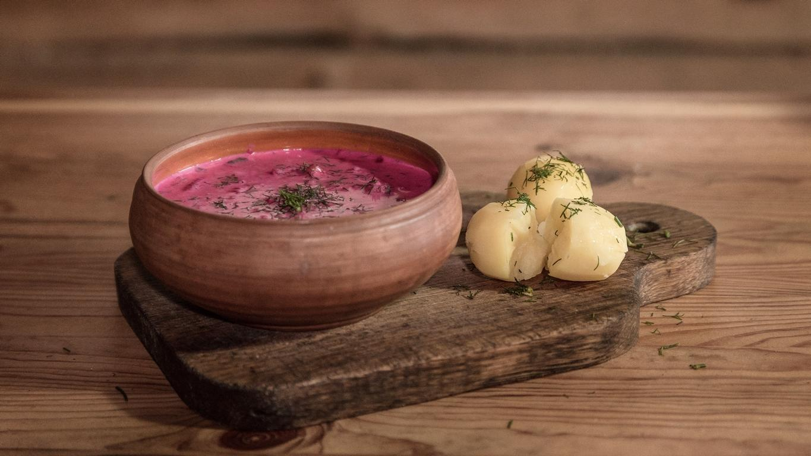

Šaltibarščiai - Lithuanian Cold Pink Soup

This is a traditional Lithuanian dish. It is usually served during warm season. It is served in almost all local restaurants. Very often you can find it as part of lunch combo. The main ingredients of this dish are beetroot, kefir (fermented milk), hard boiled eggs. Once you order this dish, you will a get couple of hot boiled potatoes garnished with dills or parsley as a side dish.
Instructions
Main dish
- Boil beetroots with a touch of salt and pepper. Let it cool down. Once cooled - grate them. Keep everything - the grated beetroots and their juices. Set aside.
- In separate pots boil eggs and potatoes
- Cut cucumbers in small pieces. Set aside.
- Cut spring onions in small pieces. Set aside.
- Cut hard boiled eggs in small pieces.
- Cut fresh dills in small pieces.
- Put everything in to the main pot: grated beetroots, cut cucumbers, cut onions, kefir, and two thirds of dills. Mix it well.
- Add some water if it is too thick.
- Clean up everything
Ingredients
Pink soup
- 3 medium-ish sized beetroot heads
- salt and pepper by taste
- 3 medium-ish sized eggs
- 3 medium-ish sized potatoes
- 3 medium-ish sized cucumbers
- 4-6 bulbs of spring onion
- 1 liter of kefir
- some water